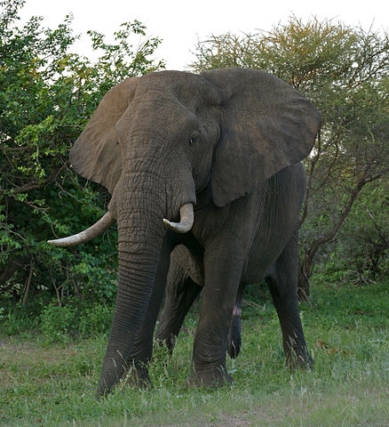

Elephantidae is a family of large, herbivorous proboscidean mammals which includes the living elephants (belonging to the genera Elephas and Loxodonta ), as well as a number of extinct genera like Mammuthus (mammoths) and Palaeoloxodon. They are large terrestrial mammals with a snout modified into a trunk and teeth modified into tusks. Most genera and species in the family are extinct. The family was first described by John Edward Gray in 1821,[5] and later assigned to taxonomic ranks within the order Proboscidea. Elephantidae has been revised by various authors to include or exclude other extinct proboscidean genera.

| Имя | Возраст | Профессия |
|---|---|---|
| Анна | 35 | Front-End Developer |
| Борис | 25 | Back-End Developer |